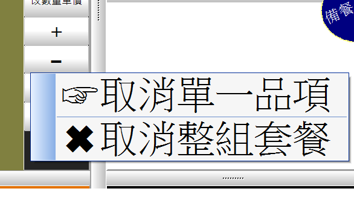

套餐取消按 ▬ 的流程問題
資料上有點問題
如果我套餐是鐵板麵+折扣兩個品項
當我點好餐之後, 畫面上會出現兩個品項 ,
按下 + , 兩個品項也會同步加一 (到這邊都沒問題)
但是當我按下 - 按鈕,
跳出 整組套餐,同步取消, 按其他處繼續三個選項 "之前"
我的折扣品項 (Focus所在的品項) 就已經被扣一了
1 個回答
您好
按下按鈕後 直接扣除 又跳出選項 的確會讓人困惑
站長已經改成2選一
請至首頁下載更新

-------------------------------------------------------------
站長想徵求使用先用POS的店家照片
作為未來先用網站愛用案例的介紹 也為貴店做個小小的宣傳
照片 請寄 advposys@gmail.com
如能提供 站長感激不盡